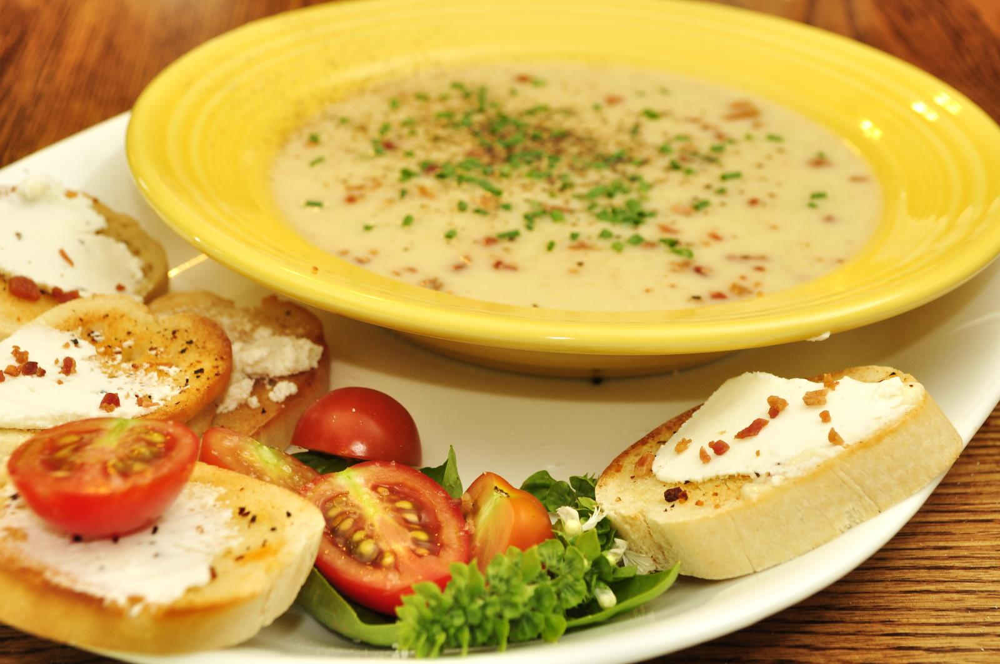

Creamy potato and leek soup

This soup is great on cold autumn nights to warm hearts and guts!
Ingredients
-
400 g potatoes
-
1 leek
-
5 dl milk
-
1 dl cream
-
1 l chicken broth
-
1 tsp salt
-
1 pinch of white pepper
-
3 crushed allspice corns
-
A few chives for garnish
-
Some cooking oil for frying
Steps
-
Boil the roughly diced potatoes in broth and milk in a pot
, then fry the leek that has been sliced in a frying pan.
-
Add the fried leek into the soup pot untill melded beautifully.
-
Add the seasoning, then blend the soup until smooth.
-
Serve in deep dishes and garnish with chives.